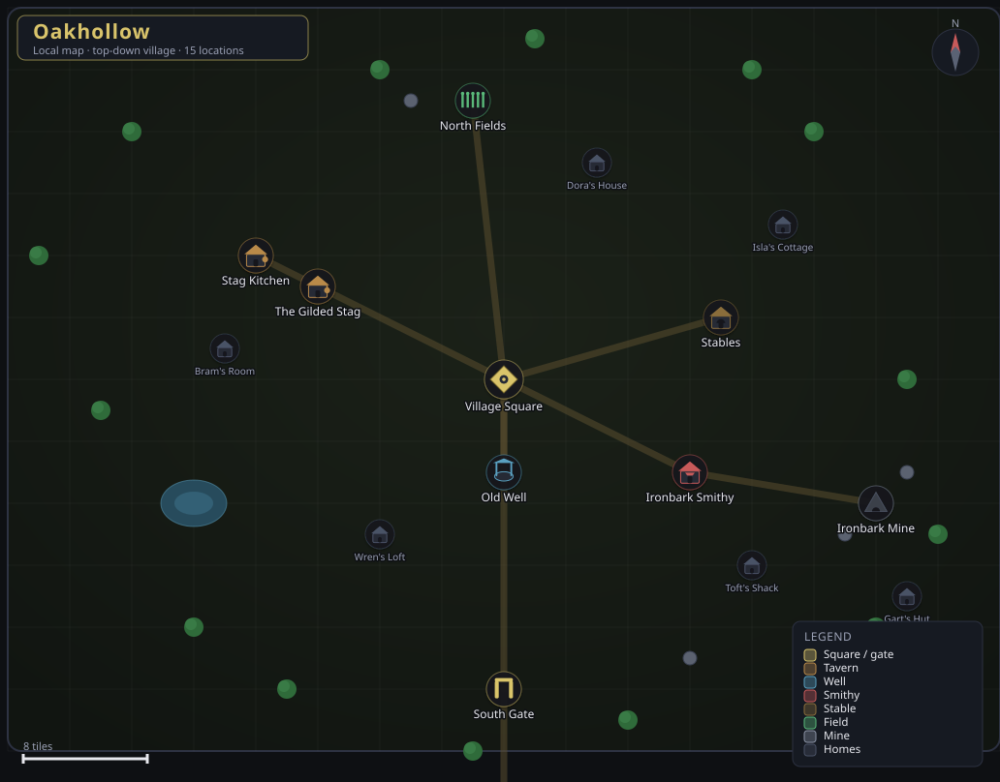
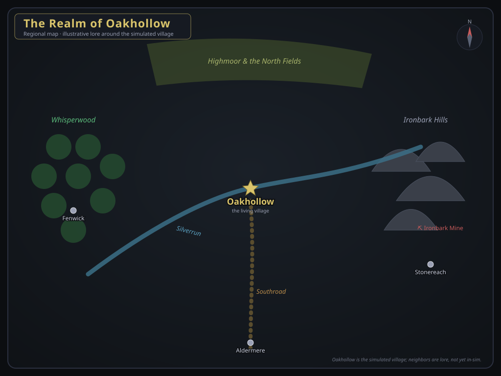

Oakhollow local map · top-down village

Every building is placed from the world's real coordinates in
backend/realmweave/world.py: the square at the hub, the
Gilded Stag and its kitchen to the west, the smithy and mine to the east,
the North Fields up top, and the South Gate where travelers arrive.
The Realm regional overview

Oakhollow within its wider realm. The village is the part the simulation runs today; Whisperwood, the Ironbark Hills, the Silverrun, and the neighboring towns are illustrative lore, not yet simulated.
Dungeons frontier delves · danger ★
Marked on the realm map above. For now the ways in and what waits are lore; making them delvable (a party, encounters, and loot through the combat system) is Phase 2.
The Kobold Warren ★★★ kobold stronghold · the Ironbark Hills
A timber-shored adit gouged into a hillside, its lintel scratched with warning-glyphs and leaking smoke. Down through the Guard Burrows and the Warren Deeps to Skarn's Throne.
Skarn the Underking hoards more than coin: a warm clutch of drake eggs, kept alive by a stolen forge-heart.
The Hollow Barrow ★★★★ undead barrow · the Highmoor
A sunken barrow-mound on the cold moor, its capstone pushed aside from below. Antechamber, Ossuary, and the Kingsbarrow itself.
The Hollow King still wears his crown and gives orders, for he does not believe his war was ever lost.
The Weeping Caverns ★★ flooded caverns · Whisperwood
A dripping cave-mouth curtained in grey web, deep in the old forest. The Dripstone Halls fall to the Sunless Pool.
Something older than the spiders taught these caves to weep; the still water hums a name almost like one you know.
The Welldeep ★★★ rats, then far worse · beneath Oakhollow
Down the trap in the Gilded Stag's cellar, past the ale-casks and a bold nest of rats, an old drain lets into the shaft of the Old Well - which goes far deeper than any bucket has ever sounded. Cellar, Well Shaft, Cistern, and the Sounding Deep.
Who cut a cistern of dressed stone a hundred fathoms under a farming village, and why does the Welldeep hum your own words back in a voice that is not yours? What mysteries await, indeed.